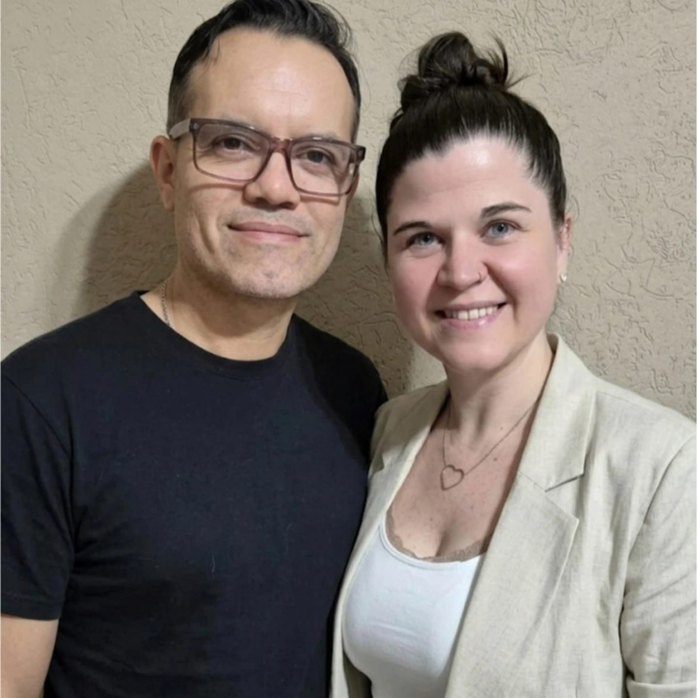
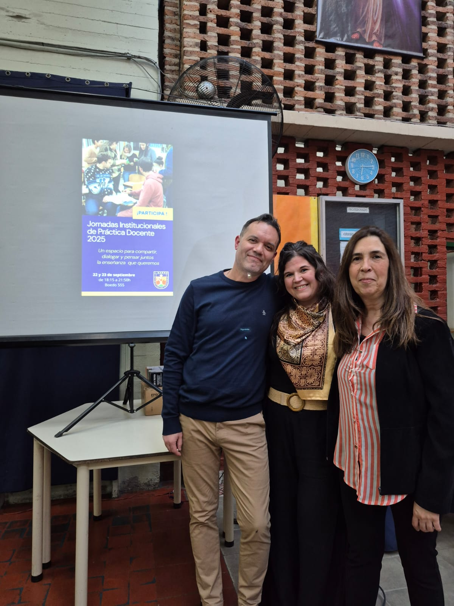
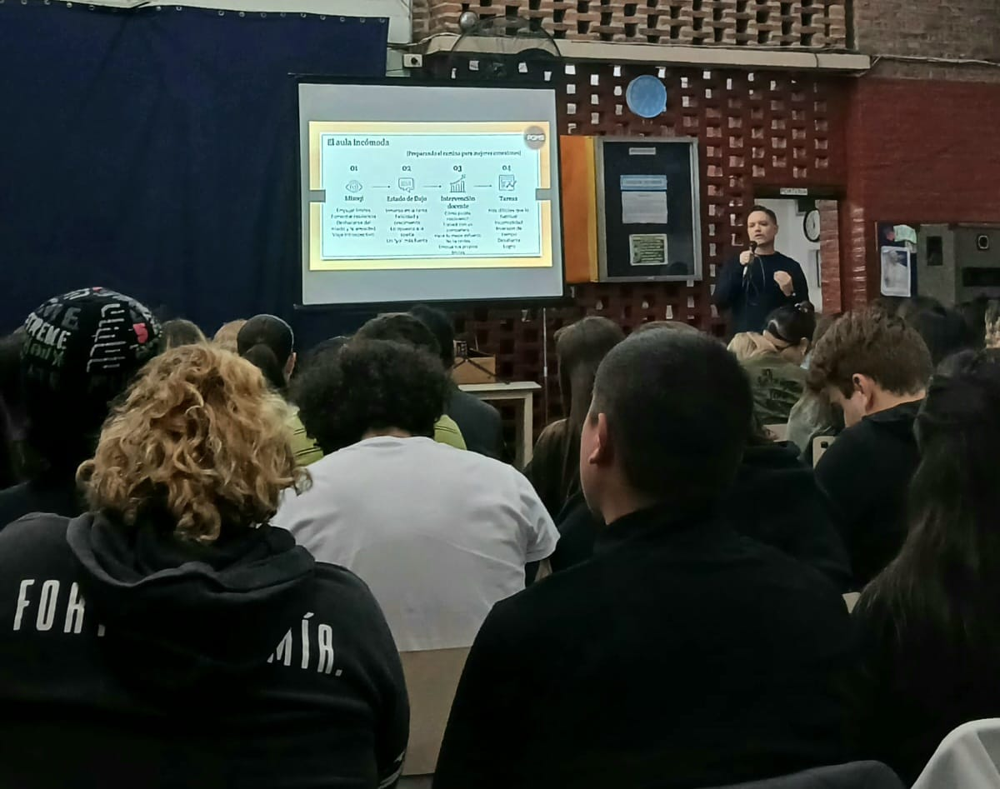

Consultora Pedagógica e Institucional
Nuestra propuesta de consultoría pedagógica e institucional se enfoca en brindar apoyo y orientación a instituciones educativas para mejorar la calidad de la educación y alcanzar sus objetivos.
Nuestro equipo trabaja estrechamente con la institución para identificar áreas de mejora y desarrollar estrategias efectivas para abordarlas.


Soluciones integrales para instituciones educativas
Orientación y apoyo para mejorar la práctica pedagógica y alcanzar mejores resultados académicos.
Análisis exhaustivo de la institución para identificar áreas de mejora y desarrollar estrategias.
Desarrollo de planes ajustados a las necesidades y objetivos de la institución.
Desarrollo de habilidades y capacidades en el personal docente y equipos directivos.
Aseguramos que se estén alcanzando los objetivos haciendo ajustes según sea necesario.
Docente / Directivo / Asesor Pedagógico e Institucional
Soy Profesor de Inglés, Licenciado en Ciencias de la Educación, Diplomado en Neuroeducación y en Neurodidáctica. Me desempeño como consultor pedagógico y educativo, director de instituciones y formador de docentes en niveles inicial, primario, secundario y superior. Trabajo desde una perspectiva integral, buscando siempre el fortalecimiento de las instituciones y de los equipos humanos, basados en valores y emociones, con los pies sobre la tierra y dentro del aula.
Docente / Directivo / Asesor Pedagógico e Institucional
Soy Profesora de Inglés, Licenciada en Educación, Diplomada en Neuroeducación, con formación en Coaching Ontológico y Psicología Educacional. Me desempeño como docente, coordinadora y asesora pedagógica en instituciones educativas. Trabajo desde una mirada empática y humana, enfocada en el acompañamiento y fortalecimiento de los equipos y procesos educativos.
Charlas, talleres y formatos mixtos para transformar la educación
Desafíos y oportunidades en la era digital. Sensibilizar a la comunidad educativa sobre los efectos cognitivos, emocionales y sociales de las pantallas.
Entender el funcionamiento de la mente para transformar la manera en que educamos.
Estrategias concretas y probadas que promueven la reflexión y el pensamiento crítico.
Intervención práctica y experiencial para transformar la forma de aprender.
Repensar la planificación para que sea flexible, significativa y humana frente a las nuevas demandas.
Transformar la burocracia en aprendizaje significativo. Comprender las normativas para llevarlas al aula.
Herramientas efectivas para comprender emergentes, actuar con propósito y reconstruir el clima áulico.
Rol de los equipos directivos. Cómo traducir el proyecto institucional a la cultura de la escuela.
La evaluación como brújula del aprendizaje, integrando planificación y procesos reales.
El liderazgo educativo actual exige más que conocimientos técnicos: requiere la construcción de hábitos sostenidos y la capacidad de perseverar frente a los desafíos del aula y la gestión escolar.
Un enfoque práctico para fortalecer tres pilares clave:
A través de ejemplos concretos y estrategias aplicables, la charla busca dejar herramientas claras para pasar de la intención a la acción sostenida, mejorando el bienestar profesional y los resultados de aprendizaje.
60-90 min Equipos directivos, docentes y coordinadores pedagógicos* Consultanos por otras temáticas en las que tu institución necesite asesoramiento
Las propuestas pueden adaptarse a las necesidades de cada grupo.